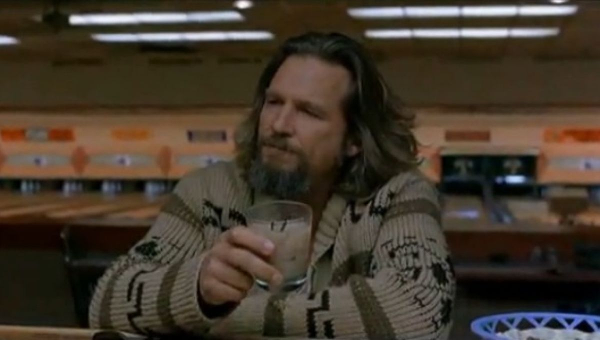

The dude's White russian

Description
"Hey, careful man, there's a beverage here."
Ingredients
- 1.5 oz. vodka
- 1.5 oz. coffee liqueur
- 1 oz. half and half milk
- 1 small pinch salt (optional)
- Ice
Steps
- Add all ingredients to a rocks glass with ice,
- Stir briefly to incorporate
- Do not shake. Do not garnish. Drink and enjoy.
source: https://www.tasteofhome.com/article/white-russian-how-to/